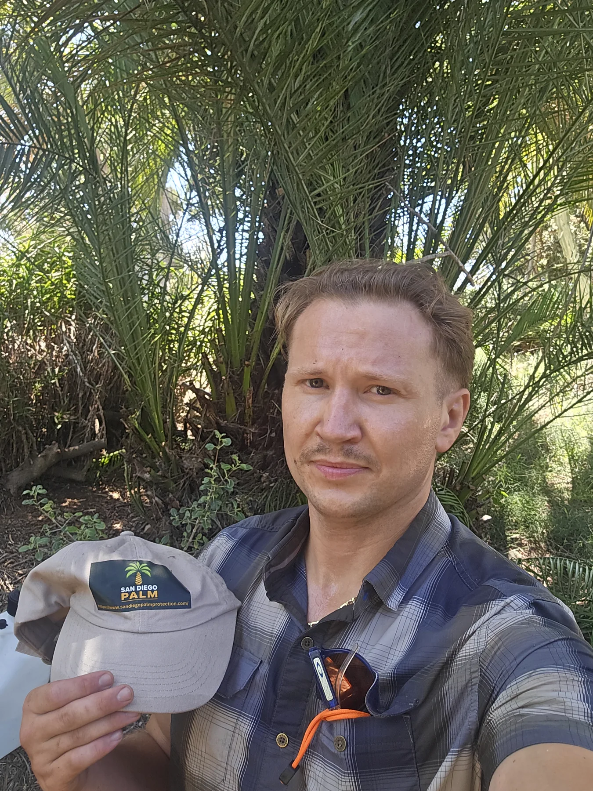
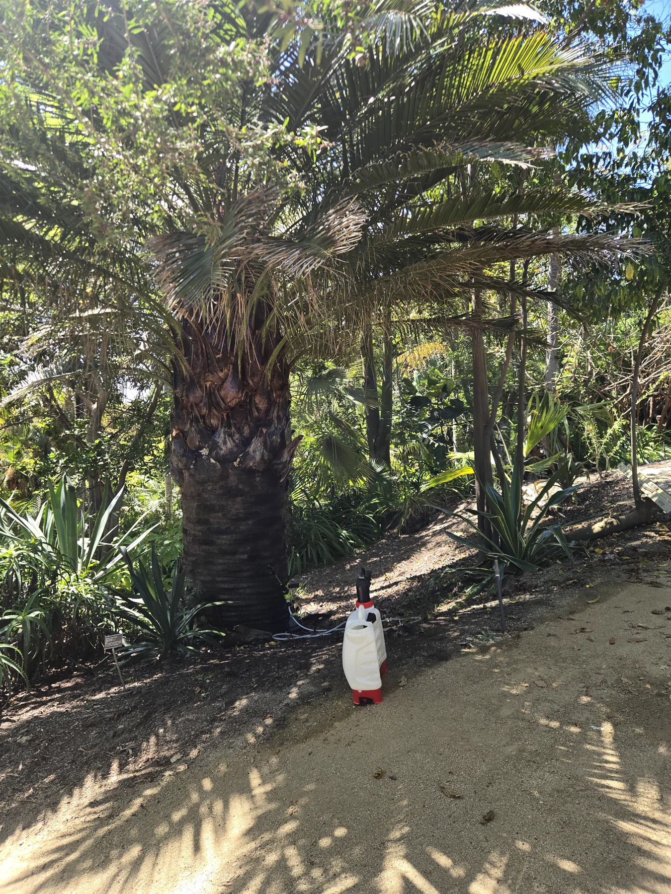
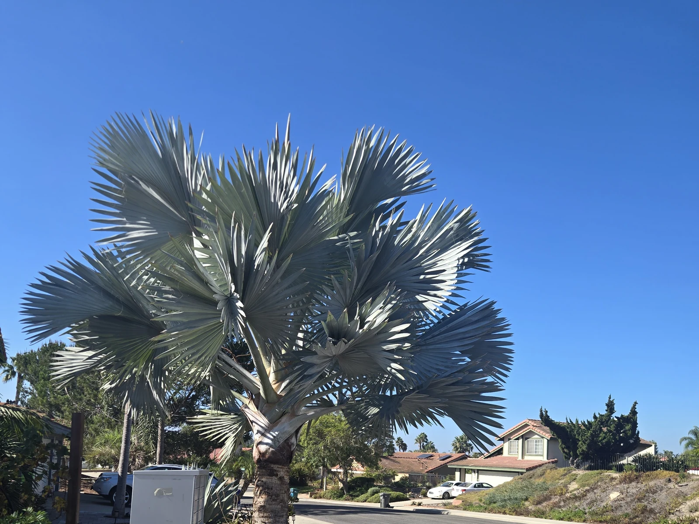
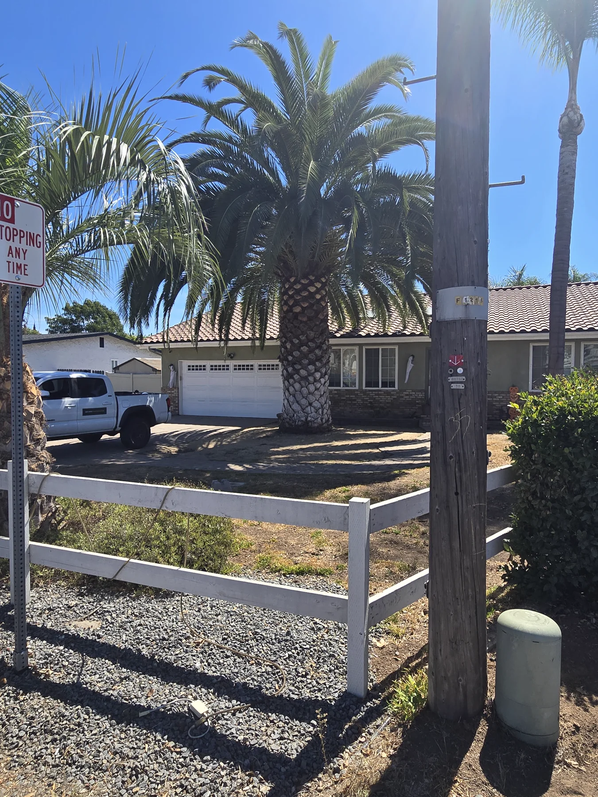

Field work and reporting
See what I photograph and what I put in writing.
These public examples show the kind of palm views I take, how I describe what I saw, and how a field visit becomes a report the owner can use.
Owner-Led Palm Stewardship
Owner-led South American palm weevil prevention and licensed treatment for valuable mature palms, with assessments, recurring care, decline response, and qualified-contractor coordination.
California Pest Control Business License No. 47756California Qualified Applicator License No. 175295Category B — Landscape MaintenanceInsured
Treatment recommendations and applications remain subject to the pesticide label, applicable law, site conditions, and agreed scope.
Capability case · Del Mar · October 17, 2026
Treatment, palm nutrition and a written next step.
One Canary Island date palm. One completed visit. A service record the owner can refer to.
Work completed
I treated the palm and applied about nine pounds of PolyPlus Opti Palm fertilizer. The amount is specific to this recorded job; it is not an application recommendation for other palms.
How the work stays connected
The treatment and fertilizer application are recorded together, with the next recommended treatment date on the invoice. The owner has a record of what was done and a next step. This was a one-time visit, not an annual-plan enrollment or a confirmed return appointment.
What this case establishes
It demonstrates treatment, palm-specific fertilization, service documentation and follow-up planning. A same-day record does not establish improved growth, corrected deficiency, confirmed infestation or lasting pest protection.
Read the Del Mar treatment and fertilization field note
Explore continuing palm stewardship or request a palm assessment.
Documented field work
Local photographs with explicit evidence boundaries.
These images come from approved SDPP field records. Their captions say what the photograph establishes—and what it does not.




Broader-area documentation
Mature Palm Documentation Example
See a sanitized example of broader-area palm documentation prepared to support preservation, monitoring, loss records, and urban-forest implementation.
This limited Old Escondido field sample is not a complete inventory, municipal plan, formal tree-risk assessment, laboratory report, or City-endorsed document.
Continue from the field
Examples, report scope, and privacy in one place.
The Palm Journal and Documented Loss preserve dated local context. A client report can connect the purpose of the visit, baseline photographs, visible findings, limitations, recommendations, and follow-through without exposing private source records.
Only separately approved, sanitized material appears publicly. Client identity, address, contact details, private notes, and unapproved photographs remain outside the website.
Private inquiry
Discuss a property or palm stewardship plan.
Tell me about the property, the palms, and what you are responsible for. I work with managed palm portfolios, large estates, and homeowners protecting important mature palms.